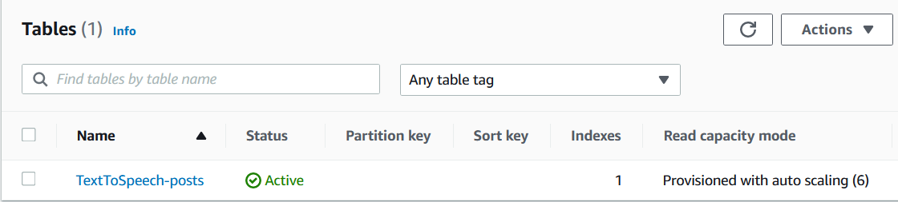
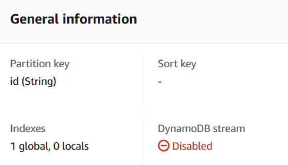
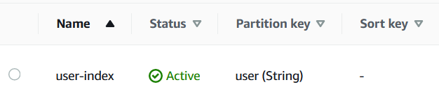
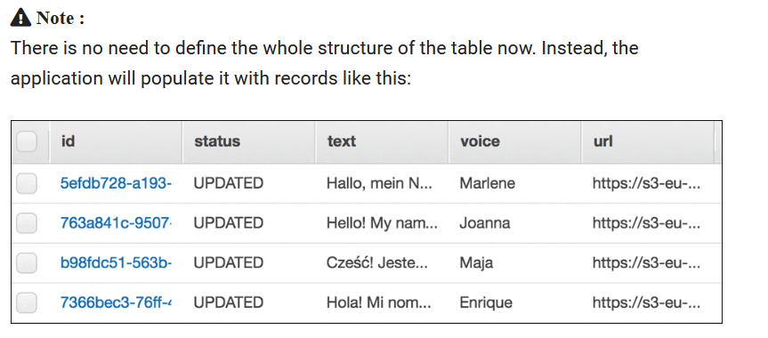

1
Étape 1
Vérification de la table DynamoDB
Amazon DynamoDB
Les données transmises à l'application, ainsi que celles générées pendant le traitement, sont stockées dans une table DynamoDB. Vous allez vérifier que la table TextToSpeech-posts existe et examiner sa structure.
Procédure
- Dans la barre de recherche en haut de la console, saisissez DynamoDB et sélectionnez le service DynamoDB.
- Vérifiez que la table TextToSpeech-posts existe, puis cliquez dessus.
- La table comporte une clé primaire nommée id et un index.
- Cliquez sur l'onglet Index : la table comporte un index user-index sur la colonne user.



i
Schéma dynamique : il n'est pas nécessaire de définir la structure complète. Les colonnes sont créées dynamiquement à l'insertion. L'application stockera :
id identifiant unique · user auteur · status PROCESSING ou UPDATED · text texte envoyé · voice voix Polly · url lien du MP3 dans S3.

★
Table prête. Vous avez vérifié TextToSpeech-posts, sa clé primaire et son index.